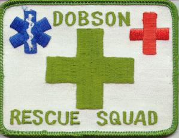

Tuesday, May the 29th, 2007
back to: title, date or indexes
A reader who for some unfathomable reason wishes to remain anonymous sent in this very exciting picture:

Dear Mr Key, wrote Anon, Can you tell me if this is (a) a contemporary item pleading for help in rescuing Dobson and his out of print pamphlets from obscurity, or (b) a piece of memorabilia dating from some point in Dobson's lifetime when he was in need of rescue from a foe, a predicament, or a nameless and terrifying imperilment? I would be glad to know, as I am sure would other Hooting Yardists.
I suppose it is touching in a way that Anon expects me to come up with an answer at the snap of his or her fingers, but, you know, sometimes these things demand research. Prodigious research, in a case like this. There are going to be sleepless nights, long trudges through the rain to suburban warehouses, bus ticket expenditure, enjanglements of the cranium, sobbing, hysteria, unanswered metal tapping machine messages, desperate snackbar encounters, and quite possibly a lengthy period of Bewilderment Home convalescence. Nonetheless, I promise that I will do what I can to find out the answer.
Hooting Yard on the Air, January the 21st, 2016 : “24 Hours” (starts around 20:21)